GAMES101 — Modern Computer Graphics Note1: Linear Algebra and Transformation
GAMES101（闫令琪，UCSB）的笔记按大章节整理，不按课程节数分。这一篇对应 Lecture 1–4： 课程概览、线性代数复习、2D/3D 变换、观测变换（view + projection）。
1. 什么是计算机图形学
Computer Graphics：the use of computers to synthesize and manipulate visual information。应用遍布游戏、电影、动画、设计（IKEA 目录 75% 是渲染图）、可视化、 VR/AR、数字插画、仿真、GUI、字体排印。
为什么图形学难？它有两类挑战：
- Fundamental intellectual challenges：创造并交互一个逼真的虚拟世界，需要理解物理 世界的方方面面，还需要新的计算方法、显示设备和技术
- Technical challenges：投影/曲线/曲面的数学、光照与着色的物理、三维形状的表示与 操作、动画与仿真、图形软件编程与硬件
课程四大块：
- Rasterization：把几何图元（三角形、多边形）投影到屏幕，再拆成 fragments （像素）。实时应用（游戏）的黄金标准
- Curves and Meshes：怎么表示几何，比如 Bézier 曲线、Catmull-Clark 细分
- Ray Tracing：从相机向每个像素发射光线，求交、着色，一直弹射到光源。离线 应用（电影、动画）的黄金标准
- Animation / Simulation：关键帧动画、质点弹簧系统等
课程不讲 OpenGL/DirectX/Vulkan 的用法、shader 语法、Maya/Blender 建模、 Unity/Unreal 开发、CV/DL。"We learn Graphics, not Graphics APIs."
图形学 vs 视觉：从 model 到 image 是 graphics（rendering），从 image 到 model 是 computer vision；建模与仿真属于 graphics，图像处理属于 vision。边界并不清晰。
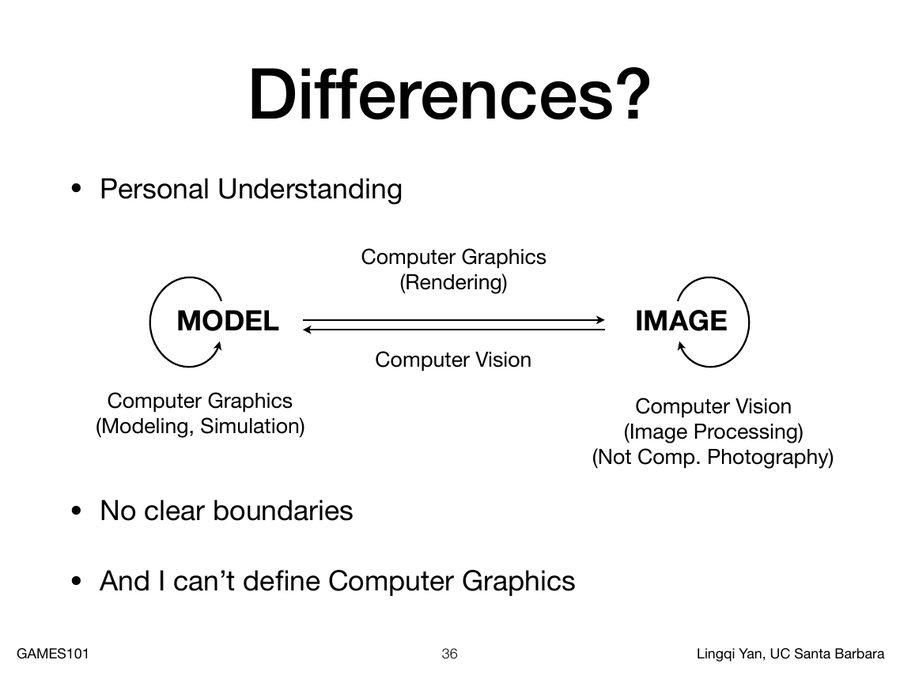
2. 线性代数复习
图形学依赖的数学：线性代数、微积分、统计；物理上是光学和力学；此外还有信号处理和 数值分析。本课最依赖线性代数：向量（点积、叉积）和矩阵（矩阵乘法）。一个 translation 或 rotation 就是一次 matrix-vector multiplication。
2.1 向量
- 向量 \(\vec{a}\) 或 \(\vec{AB} = B - A\)，只有方向和长度，没有绝对起点
- 长度记作 \(\|\vec{a}\|\)，单位向量 \(\hat{a} = \vec{a} / \|\vec{a}\|\)，用来表示方向
- 加法：几何上是平行四边形法则 / 三角形法则，代数上是坐标相加
- 笛卡尔坐标：\(A = (x, y)^T\)，\(\|A\| = \sqrt{x^2 + y^2}\)
2.2 点积（dot product）
性质：交换律、分配律、与标量乘法结合。在笛卡尔坐标下就是逐分量相乘再求和： \(\vec{a} \cdot \vec{b} = x_a x_b + y_a y_b + z_a z_b\)。
点积在图形学里的三个用途：
- 求两个向量的夹角，比如光源方向与表面法线夹角的余弦
- 求投影：\(\vec{b}_\perp = k \hat{a}\)，\(k = \|\vec{b}_\perp\| = \|\vec{b}\| \cos\theta\)， 进而可以把一个向量分解成平行和垂直两部分
- 判断两个方向有多接近，以及判断前后：点积 \(> 0\) 说明同向（forward）， \(< 0\) 说明反向（backward）
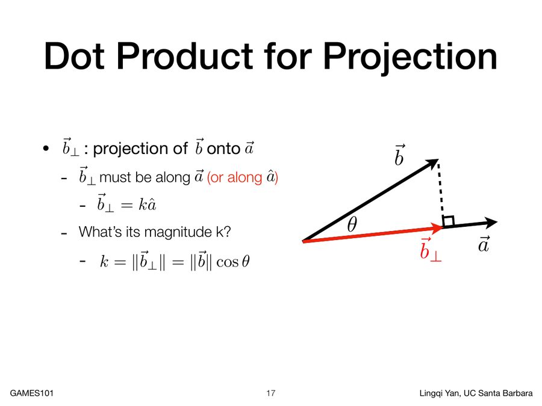
2.3 叉积（cross product）
叉积的结果垂直于两个输入向量，方向由右手定则决定，长度是 \(\|\vec{a}\| \|\vec{b}\| \sin\theta\)。性质：
笛卡尔公式：
\(A^*\) 叫 \(\vec{a}\) 的 dual matrix（反对称矩阵）。
叉积在图形学里的用途：
- 判断左右：\(\vec{a} \times \vec{b}\) 指向 \(+z\) 说明 \(\vec{b}\) 在 \(\vec{a}\) 的左侧
- 判断内外：点 \(P\) 是否在三角形 \(ABC\) 内，看 \(\vec{AB} \times \vec{AP}\)、 \(\vec{BC} \times \vec{BP}\)、\(\vec{CA} \times \vec{CP}\) 是否同号。这是后面光栅化 三角形的基础
- 构造坐标系
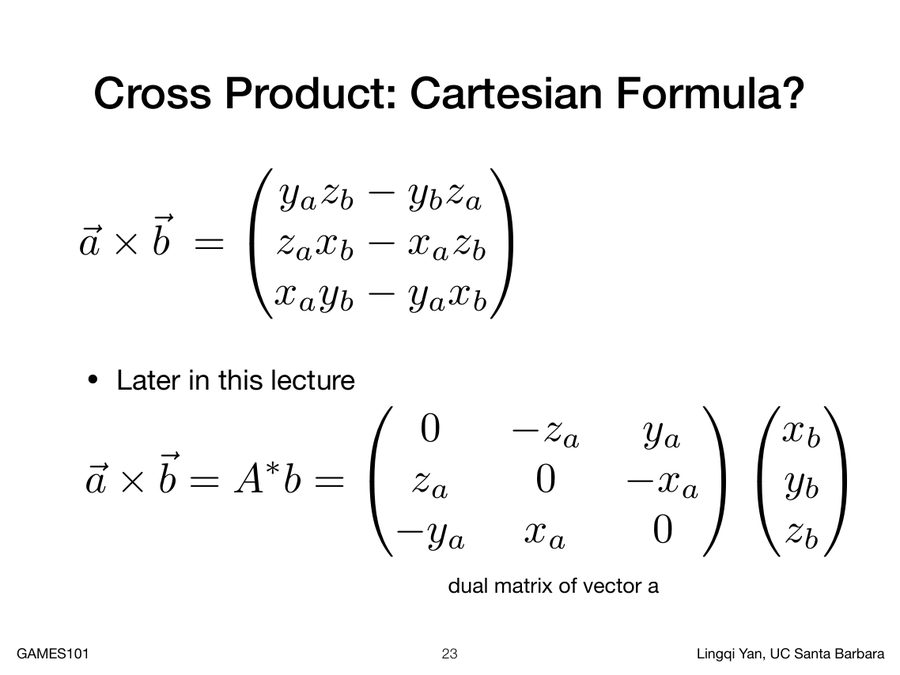
2.4 正交基与坐标系
任意三个向量满足 \(\|\vec{u}\| = \|\vec{v}\| = \|\vec{w}\| = 1\)、两两点积为 0、 \(\vec{w} = \vec{u} \times \vec{v}\)（右手系），就构成一个 orthonormal frame。任意向量 可以投影到这组基上：
图形学里同时存在很多坐标系（global/world、local/model、模型的各部件），关键问题就是 在这些坐标系之间变换，也就是下一章的内容。
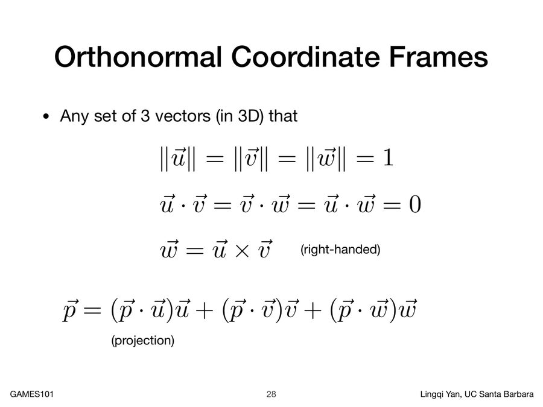
2.5 矩阵
- \(m \times n\) 数组，加法和数乘逐元素
- 乘法：\((M \times N)(N \times P) = (M \times P)\)，结果的 \((i, j)\) 元素是 A 的第 \(i\) 行 与 B 的第 \(j\) 列的点积。不满足交换律，满足结合律和分配律
- Matrix-vector multiplication：把向量当 \(m \times 1\) 的矩阵。这是变换点的关键， 比如关于 y 轴的反射 \(\begin{pmatrix} -1 & 0 \\ 0 & 1 \end{pmatrix} \begin{pmatrix} x \\ y \end{pmatrix} = \begin{pmatrix} -x \\ y \end{pmatrix}\)
- 转置：\((AB)^T = B^T A^T\)
- 单位矩阵与逆：\(A A^{-1} = A^{-1} A = I\)，\((AB)^{-1} = B^{-1} A^{-1}\)
- 点积和叉积都能写成矩阵形式：\(\vec{a} \cdot \vec{b} = \vec{a}^T \vec{b}\)， \(\vec{a} \times \vec{b} = A^* \vec{b}\)
3. 2D 变换与齐次坐标
为什么学变换？Modeling（平移、旋转、缩放物体）和 Viewing（3D 到 2D 的 投影）都是变换。
3.1 线性变换
Scale：\(x' = s_x x,\ y' = s_y y\)，即 \(\begin{pmatrix} x' \\ y' \end{pmatrix} = \begin{pmatrix} s_x & 0 \\ 0 & s_y \end{pmatrix} \begin{pmatrix} x \\ y \end{pmatrix}\)。 \(s_x = s_y\) 时是均匀缩放。
Reflection（关于 y 轴）：\(\begin{pmatrix} -1 & 0 \\ 0 & 1 \end{pmatrix}\)。
Shear：水平错切，\(y = 0\) 处水平位移为 0、\(y = 1\) 处为 \(a\)，垂直方向不动，所以 \(\begin{pmatrix} 1 & a \\ 0 & 1 \end{pmatrix}\)。
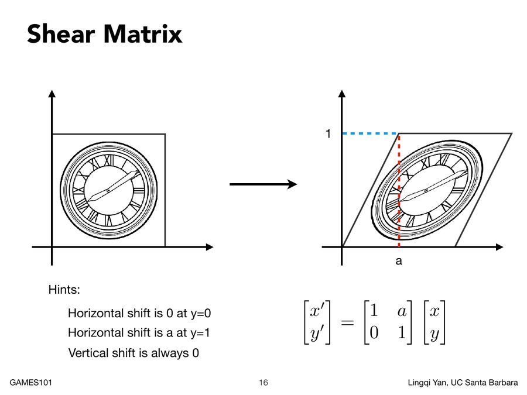
Rotation（绕原点，默认逆时针）：
推导方法是看两个基向量去了哪：\((1, 0) \to (\cos\theta, \sin\theta)\)， \((0, 1) \to (-\sin\theta, \cos\theta)\)，把它们按列摆好就是矩阵。顺便注意 \(R_{-\theta} = R_\theta^T = R_\theta^{-1}\)，旋转矩阵是正交矩阵。
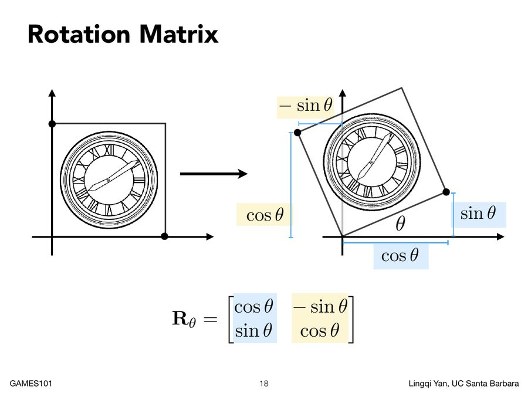
以上所有变换都是 linear transform：\(x' = ax + by,\ y' = cx + dy\)，即 \(\mathbf{x}' = M \mathbf{x}\)，\(M\) 是同维度的矩阵。
3.2 齐次坐标（homogeneous coordinates）
Translation \(x' = x + t_x,\ y' = y + t_y\) 写不成 \(M\mathbf{x}\) 的形式，只能写成 \(\mathbf{x}' = M\mathbf{x} + \mathbf{t}\)，所以平移不是线性变换。但我们不想让平移 成为特例，希望有统一的表示（代价是什么？）。
解法：加一个 w 坐标。
- 2D 点 \(= (x, y, 1)^T\)
- 2D 向量 \(= (x, y, 0)^T\)
于是平移变成矩阵乘法：
如果平移的是向量（\(w = 0\)），结果不变，符合"向量没有位置"的直觉。所以 w 的 设计是有意义的：
- vector + vector = vector（\(0 + 0 = 0\)）
- point − point = vector（\(1 - 1 = 0\)）
- point + vector = point（\(1 + 0 = 1\)）
- point + point = ？在齐次坐标里 \((x, y, w)\) 表示 2D 点 \((x/w, y/w)\)（\(w \ne 0\)）， 所以两个点相加 \(w = 2\)，表示的是两点的中点
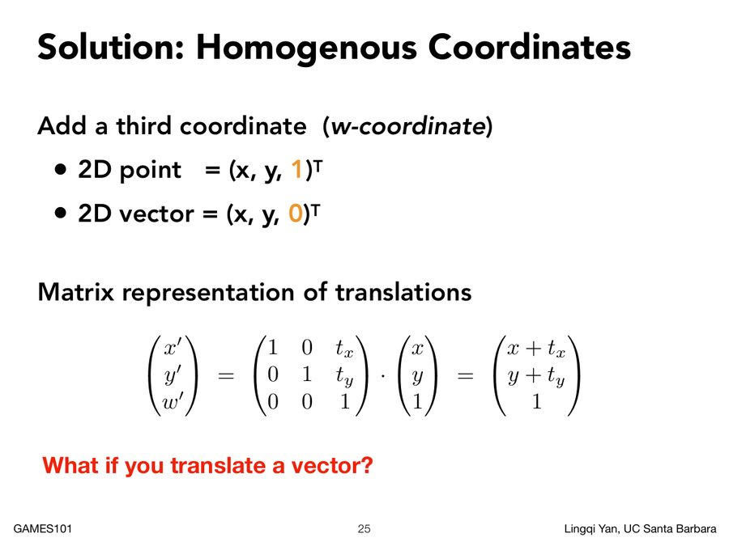
Affine transformation = linear map + translation：
注意这个写法隐含了先线性变换再平移的顺序。三个基本变换的齐次形式：
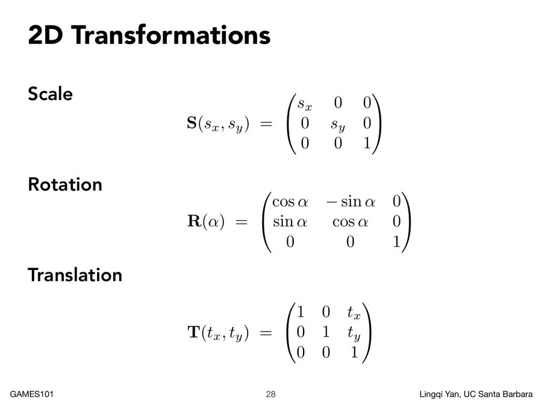
Inverse transform：\(M^{-1}\) 在矩阵和几何意义上都是逆变换。
3.3 变换的复合与分解
顺序很重要。先平移再旋转 \(M = R_{45} \cdot T_{(1, 0)}\) 和先旋转再平移 \(M = T_{(1, 0)} \cdot R_{45}\) 结果完全不同，因为矩阵乘法不可交换。矩阵是从右往左 依次作用的：
一串仿射变换可以预先乘成一个矩阵，这对性能非常重要。
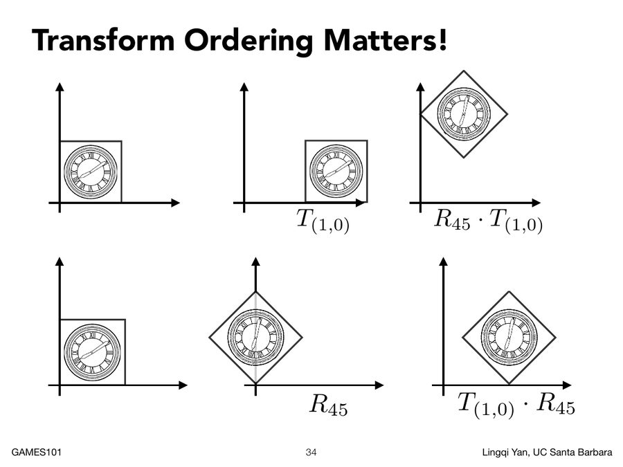
分解复杂变换：绕给定点 \(c\) 旋转怎么做？先把 \(c\) 平移到原点，旋转，再平移回去： \(T(c) \cdot R(\alpha) \cdot T(-c)\)。
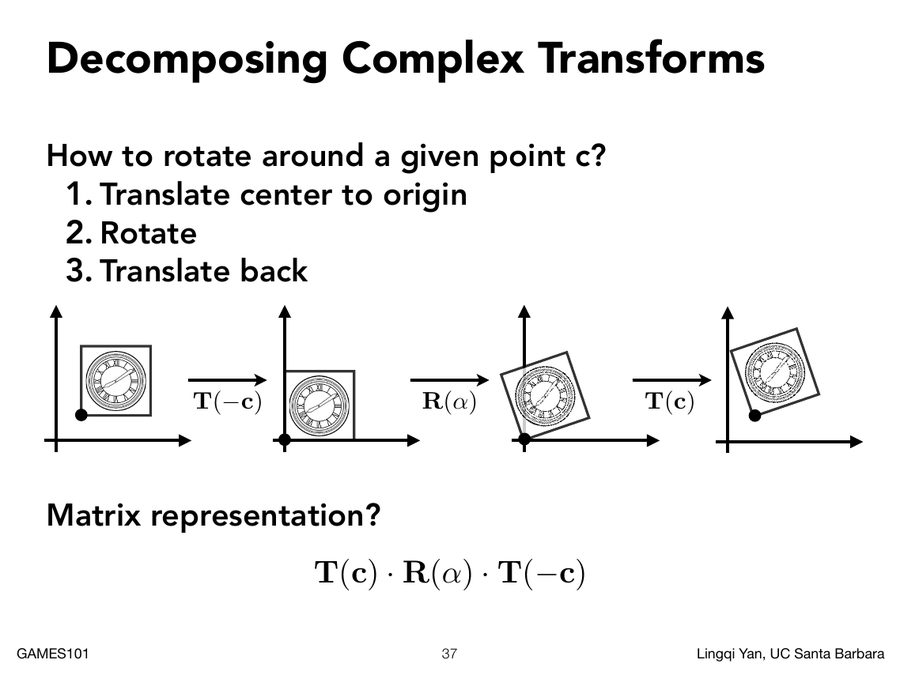
4. 3D 变换
同样用齐次坐标：3D 点 \(= (x, y, z, 1)^T\)，3D 向量 \(= (x, y, z, 0)^T\)，一般地 \((x, y, z, w)\) 表示点 \((x/w, y/w, z/w)\)。仿射变换用 \(4 \times 4\) 矩阵：
Scale 和 Translation 直接推广。绕坐标轴的旋转：
\(R_y\) 为什么"反过来"？ 因为按循环顺序 \(x \times y = z\)、\(y \times z = x\)， 但 \(z \times x = y\)，即绕 y 轴时 z 在前、x 在后，所以 \(\sin\) 的符号位置和另外两个相反。
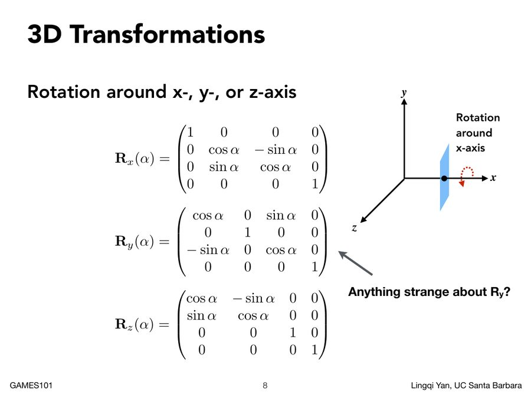
任意 3D 旋转可以由三个轴的旋转复合：\(R_{xyz}(\alpha, \beta, \gamma) = R_x(\alpha) R_y(\beta) R_z(\gamma)\)， 即 Euler angles，飞行模拟里叫 roll、pitch、yaw。
Rodrigues' rotation formula：绕（过原点的）轴 \(\mathbf{n}\) 旋转 \(\alpha\)：
\(N\) 就是叉积矩阵，\(N\mathbf{x} = \mathbf{n} \times \mathbf{x}\)。证明思路：取正交系 \(\mathbf{e}_1, \mathbf{e}_2, \mathbf{n}\)，则 \(R\mathbf{n} = \mathbf{n}\)， \(R\mathbf{e}_1 = \cos\alpha \, \mathbf{e}_1 + \sin\alpha \, \mathbf{e}_2\)， \(R\mathbf{e}_2 = -\sin\alpha \, \mathbf{e}_1 + \cos\alpha \, \mathbf{e}_2\)。绕不过原点的轴， 先平移到原点再平移回去。旋转的另一种表示是 quaternion，主要方便做旋转的插值。
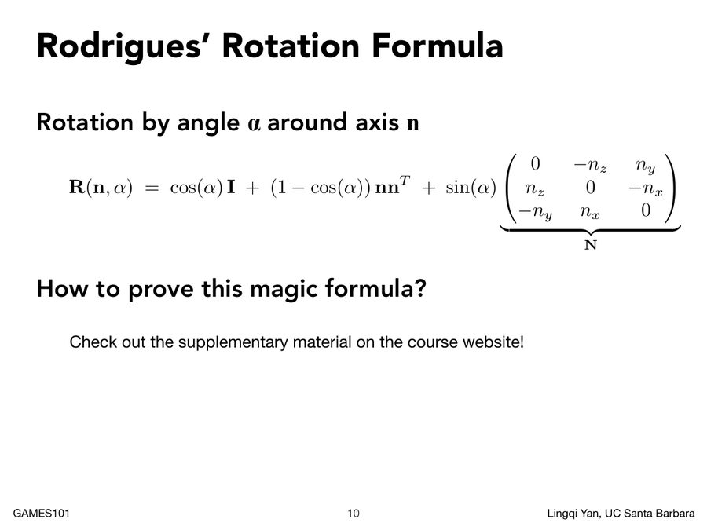
5. 观测变换（Viewing Transformation）
拍照的三步对应三个变换，合称 MVP：
- 找好地方摆好人：Model transformation
- 找好角度放相机：View transformation
- 按快门：Projection transformation
5.1 View / Camera transformation
先定义相机：位置 \(\vec{e}\)，look-at 方向 \(\hat{g}\)，up 方向 \(\hat{t}\)（假设与 \(\hat{g}\) 垂直）。
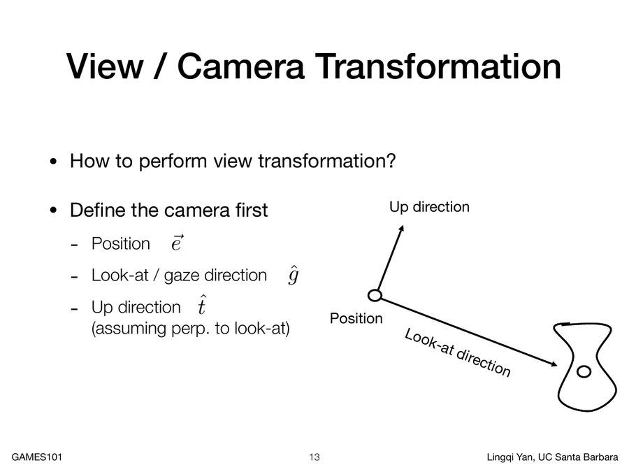
关键观察：相机和所有物体一起动，照片不变。所以约定把相机变换到标准位置： 在原点，up 是 Y，看向 −Z，物体跟着相机做同样的变换。
\(M_{view} = R_{view} T_{view}\)：先把 \(\vec{e}\) 平移到原点，再把 \(\hat{g}\) 转到 −Z、 \(\hat{t}\) 转到 Y、\(\hat{g} \times \hat{t}\) 转到 X。
旋转直接写不好写，但它的逆很好写：把 X 转到 \(\hat{g} \times \hat{t}\)、Y 转到 \(\hat{t}\)、 Z 转到 \(-\hat{g}\)，就是把这三个向量按列摆好：
因为旋转矩阵是正交矩阵，逆就是转置。
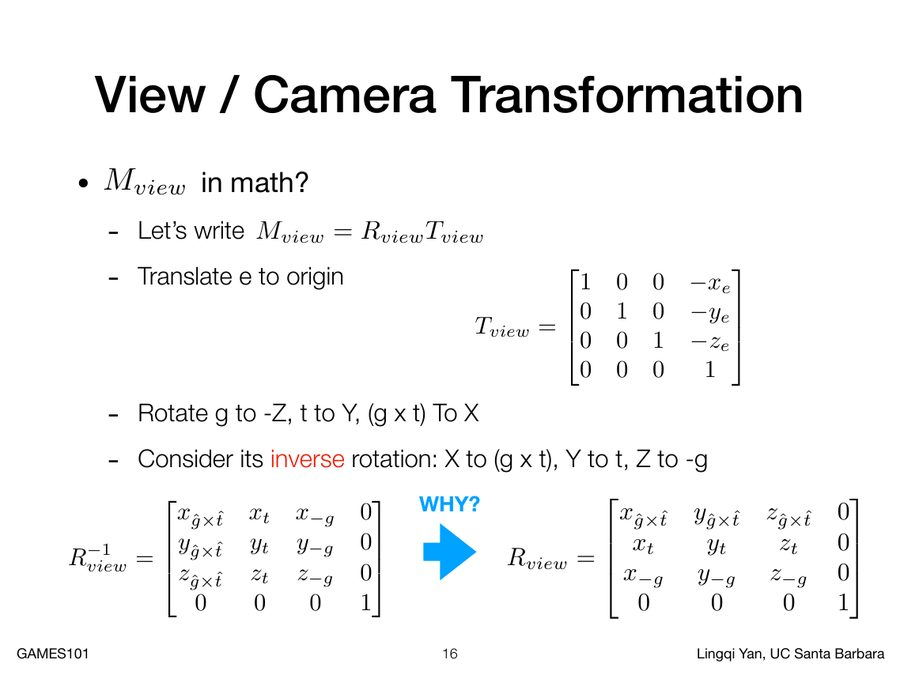
View transformation 也叫 ModelView transformation（因为常和 model 变换合在一起）。 为什么要费劲把相机放到标准位置？为了接下来的投影。
5.2 Projection transformation
3D 到 2D 有两种投影：
- Orthographic projection（正交）：平行线保持平行，没有近大远小
- Perspective projection（透视）：更常见，远处物体更小，平行线汇聚到一点
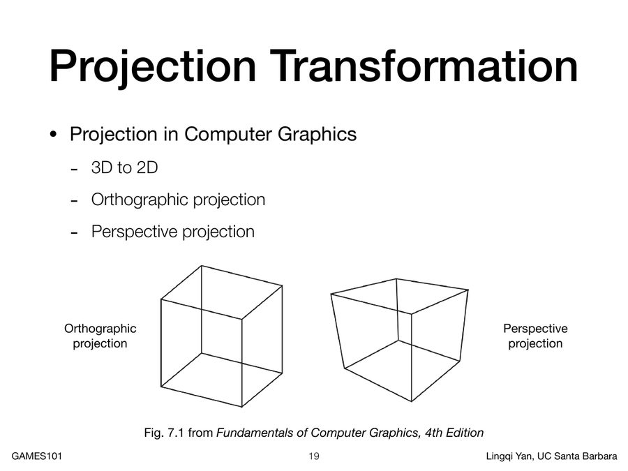
Orthographic projection
简单理解：相机在原点看向 −Z（这就是为什么要先做 view 变换），扔掉 z 坐标，把 得到的矩形平移缩放到 \([-1, 1]^2\)。
一般做法：把长方体 \([l, r] \times [b, t] \times [f, n]\) 映射到 canonical cube \([-1, 1]^3\)。先平移让中心到原点，再缩放让边长变成 2：
Caveat：因为看向 −Z，near 和 far 都是负数而且 \(n > f\)，不太直观。这就是为什么 OpenGL 用左手系。
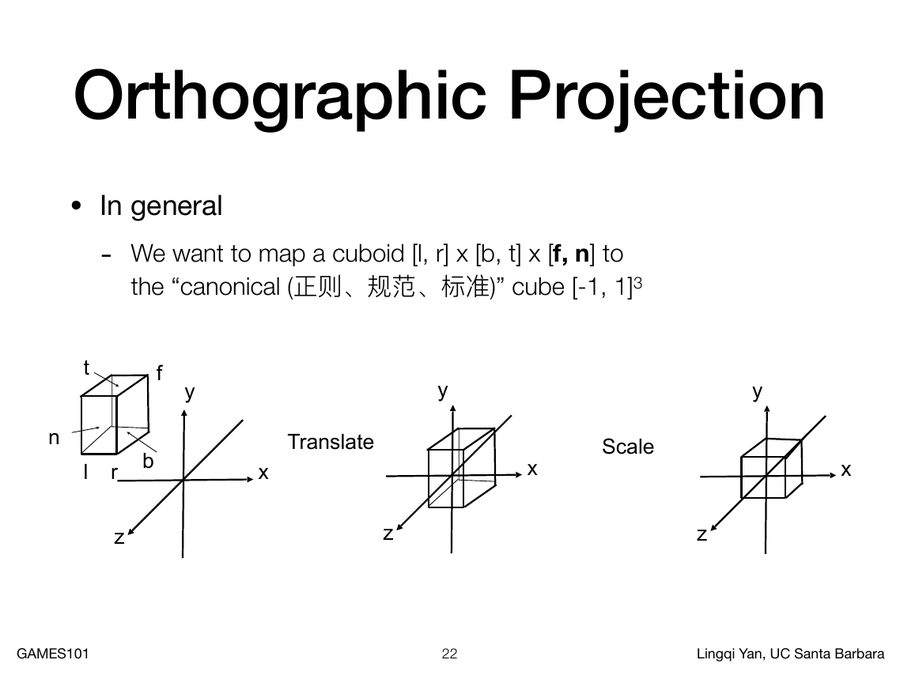
Perspective projection
先回忆齐次坐标的性质：\((x, y, z, 1)\)、\((kx, ky, kz, k)\)、\((xz, yz, z^2, z)\)（\(k, z \ne 0\)） 表示同一个 3D 点 \((x, y, z)\)。简单但很有用。
做法分两步：
- 先把 frustum "挤压"成长方体（\(n \to n\)，\(f \to f\)），记作 \(M_{persp \to ortho}\)
- 再做已知的正交投影 \(M_{ortho}\)
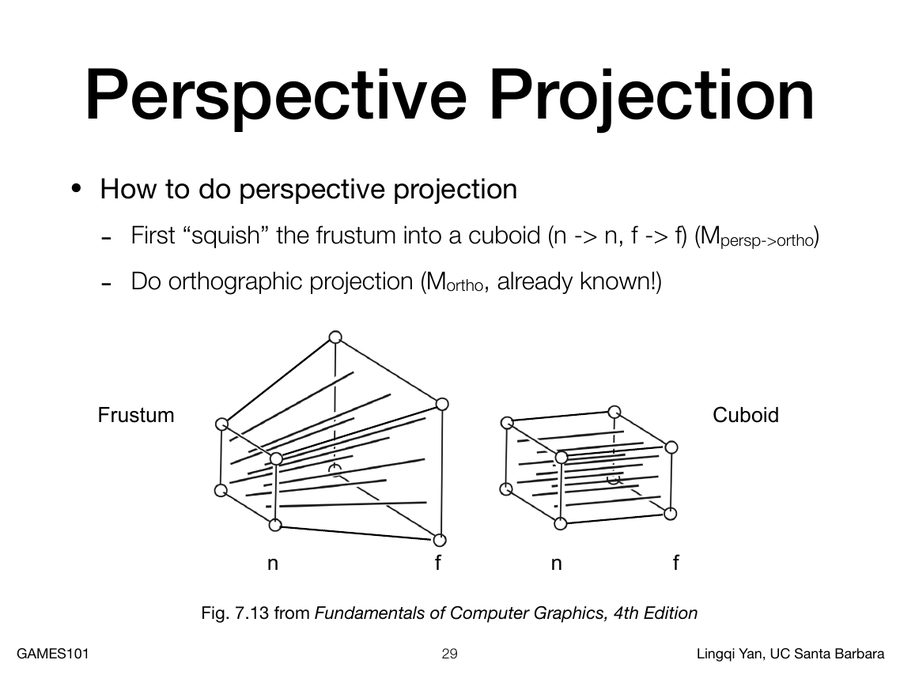
挤压时约定：近平面上的点不动，远平面上点的 z 不变，远平面的中心点也不动。找变换的 方法是找变换前后点的关系。由相似三角形：
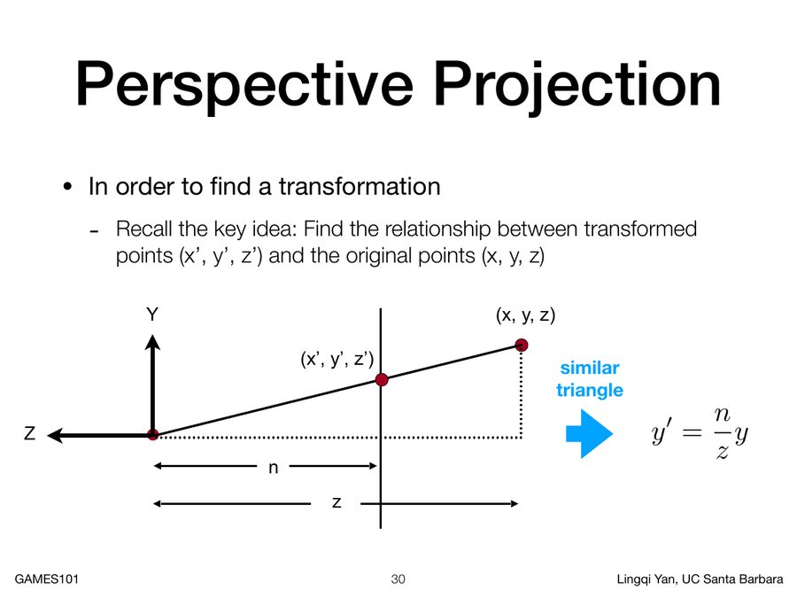
在齐次坐标里，把整个向量乘以 \(z\)（合法，仍是同一个点）：
于是已经能写出矩阵的三行：
第三行负责 \(z'\)。利用两个观察：
- 近平面上的点不变：把 \(z\) 换成 \(n\)，\((x, y, n, 1)^T \to (nx, ny, n^2, n)^T\)。 \(n^2\) 与 \(x, y\) 无关，所以第三行形如 \((0, 0, A, B)\)，且 \(An + B = n^2\)
- 远平面上点的 z 不变：取远平面中心 \((0, 0, f, 1)^T \to (0, 0, f^2, f)^T\)， 得 \(Af + B = f^2\)
解得 \(A = n + f\)，\(B = -nf\)。于是
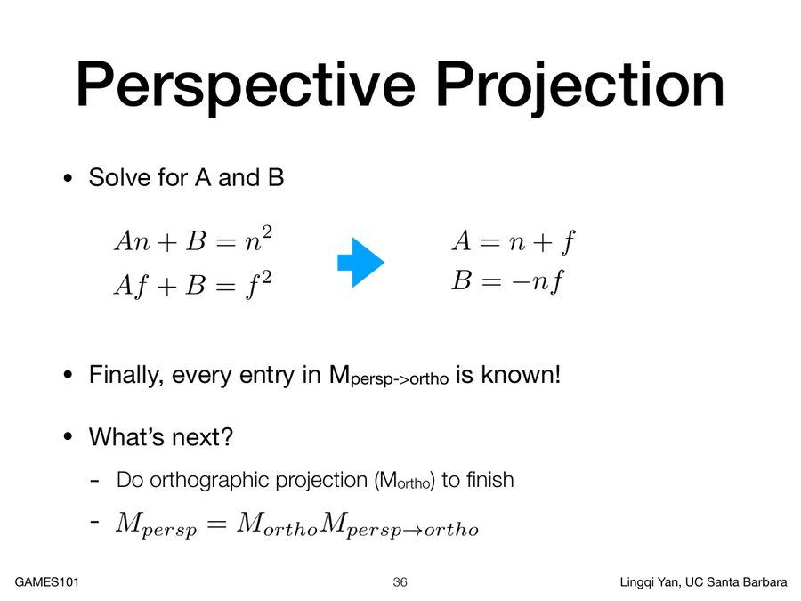
思考题：frustum 中间（\(n < z < f\)）的点被挤压后，z 是变近了还是变远了？把 \(z' = (n + f) - nf / z\) 和 \(z\) 比较，可以证明中间的点会被推向远平面。
用 fov 和 aspect ratio 定义 frustum
实际中不直接给 \(l, r, b, t\)，而是给垂直视场角 fovY 和宽高比 aspect \(= \frac{r - l}{t - b}\)：
由此可以反推出 \(l, r, b, t\)（对称的情况下 \(l = -r\)，\(b = -t\)）。
5.3 小结：MVP 之后
MVP 做完，所有东西都在 canonical cube \([-1, 1]^3\) 里。接下来要把它画到屏幕上， 也就是 viewport transformation 和光栅化，见下一篇。
Comments